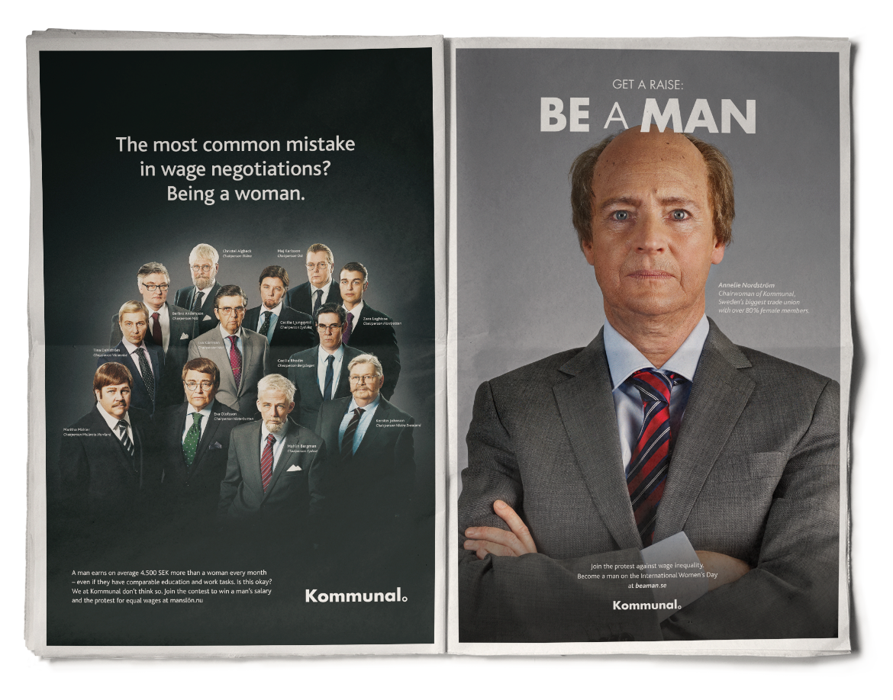

I’m a planner from Sweden equipped to tackle the modern media landscape. Fluent in Advertising, Branding, and Digital. Also a strong advocate of common sense.
Problem: At the current pace it will take us over a 100 years until women's salaries equal men's.
Strategy: Start a protest for the absurd issue in a way that everyone - no matter profession, sex or political colour - can understand and agree with.
Solution: Let Annelie Nordström, Chairman of Kommunal - Sweden’s largest labour union with half a million members of which 80% female, become a man on the International Women’s Day.
The concept started off as the project Byt lön (Get a Raise) in 2013, evolved in 2014 to Be a man and continued to spread through the organisation when all twelve division chairpersons (all women of course!) became men in 2015.
Role: Lead Planner / Volontaire
Problem: Skin cancer is increasing rapidly but Swedes forget to protect themselves when in Sweden. It's best to stay in the shade, something difficult to tell our sun thirsty citizens.
Strategy: Make it fun to play in the shade!
Solution: We created the world’s first soccer pitch made out of shade where the lines are visible only when the sun hits the hardest.
Role: Lead Planner / Volontaire
Problem: Young Swedes lack interest in banks and don't save as much as they should.
Strategy: Remind young Swedes of the benefits of starting a new savings account in a different bank from your regular one.
Solution: We launched a game featuring a piggy bank (almost) impossible to plunder, released just in time for the tax refunds.
Role: Lead Planner / Volontaire
Undersköterska är Sveriges vanligaste jobb. Trots det är det många som inte vet hur tungt arbetet faktiskt är. Både fysiskt och mentalt.Är det okej att ett arbete är så tungt att väldigt få orkar jobba heltid?
Posted by Kommunal on Wednesday, June 24, 2015
Voice-Over: Few people realize how hard a nurse aide’s job is. Both physically and mentally. That is why we condensed an 8 hour shift to an explosive 16 minute workout, so that you can try how tough a nurse aide’s job really is. You are welcome to sweat like a real welfare worker!
Problem: People think it's easy to be a nursing aide.
Strategy: Raise awareness of the poor working conditions for nursing aides in a way that everyone can understand, and put an end of the discussion that “they can change profession if it’s that bad.” After all it is the most common job in Sweden with over 170 000 workers.
Solution: Prove that it's though.
Results: Since the launch of the project in June 2015 the promotional film has 285 000 views, 5000 likes and over 6000 shares on Facebook alone, without any bought media whatsoever. The response has been fantastic from nurse aides challenging their friends and family. Also the Prime minister Stefan Löven and several other influential people have tried the workout as of today. Also Kommunal’s twin organisations in Finland, Norway and Denmark are planning to do similar campaigns. The project is on tour as of November 2015.
The nursing aide works leaning forward to make beds with new cover sheets. This wears on the shoulders, breast and back.
Attach the band to a door handle. Grab the handle with both hands and lean forward from the hip. Pull straight arms down towards the legs. Return to starting position.
Role: Lead Planner / Volontaire
Find Your Swede“Find Your Swede” is an initiative by VisitSweden with the aim of showing you a different Sweden beyond guidebooks and glossy pictures – through the eyes of the people who live here. Read more about the project and take the test at http://www.findyourswede.com
Posted by Sweden on Monday, October 19, 2015
Problem: People don’t trust glossy guide books and exploited travel sites, they want authentic advice from someone similar to themselves.
Strategy: Prove that Sweden progressive by letting people know who they would be if the lived in Sweden, based on personality and not demographics.
Solution: A test that matches you with your Swedish equal to follow on Instagram.
This Beta version is a minimum viable product where the main focus is on the actual test. We need real data to test and adjust the advanced algorithm working behind the scenes. An new version is to be launched in early 2016.
In addition to planning I have also led the development of the actual questions used in the test. We teamed up with a psychologist who created the foundation based on the proven theory of the big five personality traits. To make the matching process better we also added an interest inventory.
Role: Lead Planner / Volontaire
Problem: Brand strategy terminology.
Solution: Just finish the sentences.
I have developed a brand strategy document for Volontaire where I’m currently employed. It’s used by all planners on all clients. The base the whole strategy is a human need. To not interfere or get stuck in discussion on terminology I have avoided the usual strategy concepts. For example, instead of filling in vision, mission, and belief, just finish sentences like “We want…”, “We will...”, “We believe...”.
Developed during a 24h hackathon in cooperation with Sveriges Radio (Radio Sweden). The brief was to explore the future of radio.
Problem: It’s difficult to pick a podcast to listen to.
Solution: An app that makes it possible to tune into podcasts - just like radio used to be.
Team: Kalle Persson, Unn Swanström and Jonny Strömberg.
Problem: Stroke patients have unequal rehabilitation resources depending where they live.
Strategy: Create awareness and advocacy for the issue by giving people a chance to feel what it's like to relearn things we all take for granted, just like stroke patients have to do.
Solution: Let people change hand while signing a petition for better stroke rehabilitation.
Role: Lead Planner / Volontaire